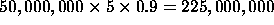

Retrograde Analysis (RA) is an important search technique developed within the field of Artificial Intelligence. It is applicable to search spaces which can be completely enumerated within the memory of a computer system. Given such a complete enumeration, RA first marks all end positions (e.g., checkmate), and then, by making unmoves from the end positions works its way back to the positions farthest from the end positions, on the way determining the game-theoretical value of all positions in the search space. Thus, RA searches bottom-up, whereas most other search algorithms, such as Breadth-First Search, Depth-First Search, A*, and Alpha-Beta Search proceed top-down.
The main advantage of RA is that for each position in the state space the optimal solution is determined, whereas application of a top-down search technique only provides the optimal solution for a single starting position, and the positions on the solution path.
Retrograde analysis has been used to create endgame databases for several two-player games. Such databases contain the game-theoretical value for all positions in certain kinds of endgames. (An endgame is the final phase of a game, in which the board contains few pieces.) The database needs to be computed only once, and can then be used during subsequent plays. Below, we give three examples of such databases.
First, Ken Thompson created chess endgame databases[13]. All endgame databases for positions with at most five pieces are available on CD-ROM. Also, a large number of six-piece endgame databases have been investigated [10]. The creation of these omniscient databases has even led to changes in the rules of chess.
As another example, endgame databases are the main component of the checkers program Chinook [9]. Chinook is the reigning Man-Machine World-Champion checkers player. It has an endgame database for all interesting positions of at most eight men. It will therefore always play the best move for every position with eight or fewer pieces on the board. In addition, if the program analyses positions with more than eight pieces, it can use the database whenever its forward search leads to positions that are within the database.
Another board game, nine men's morris, has been proven a draw by creating a database for all legal positions of the game [6].
The main disadvantage of RA is that it requires a huge amount of CPU time and internal memory. For each position in the search space an entry must be created in the database. The information to be stored in such an entry normally requires a few bits or bytes. For games like chess, checkers, and nine men's morris, the size of the search space grows exponentially with the number of pieces on the board. The search spaces of the largest five-piece chess endgames consist of some 1 billion entries. Even though a reduction of the search space through the exploitation of board symmetries can be obtained, the availability of internal memory is a limiting factor in the creation of these databases. The use of virtual memory does not solve the problem, as there is almost no locality in the algorithm.
The high computational cost of RA is mainly caused by several expensive operations that are applied to each entry. From the board position of the entry, the set of parent positions must be generated using unmoves. The costs of this operation depend on the complexity of the rules of the game. Also, conversions are needed between a board position and a database address. Conceptually, the database is indexed with board positions, but an RA program internally uses addresses (integers) for indexing, since these require much less memory. The program uses conversion operations (similar to perfect hash functions) to calculate the address from a board position and vice versa. As a result of all these operations, the creation of a typical endgame database of, say, 50 million entries, takes in the order of several hours of CPU time on today's workstations.
In this paper we describe a parallel distributed retrograde analysis algorithm. The algorithm is intended to be implemented on a distributed-memory system, such as a collection of workstations connected by a network. The parallelism ensures that more CPU cycles are available to execute the costly conversion and unmove operations, thus allowing us to perform the RA faster. The distribution combines local memories of a large number of machines, making more internal memory available, thus allowing us to apply RA to larger search spaces. It is of course also possible to use a single machine with a very large main memory, but this may not be cost-effective, as shown by Wood and Hill [14].
In the course of our research we have found that parallel distributed RA is a very hard problem, mainly because of the large communication overhead. As an example, let us assume that we perform an RA of a search space of 50 million entries on 10 processors, each storing 10% of the database entries. Assuming a total lack of locality, 90% of all communication between two database entries results in a message between two processors. For a typical application domain, where in each position on average 5 unmoves are possible, the number of messages sent during the calculation of the database is roughly , or 22,500,000 messages per processor. Assuming that each message requires 1 msec, each processor must spend approximately 22,500 seconds (about 6 hours) just on communication. A sequential implementation is likely to be faster. Other problems to be solved include load balancing, synchronization, and distributed termination.
This paper presents a parallel RA algorithm that optimizes communication and load balancing. The paper also presents measurements for one example game (awari), which show that good performance can be achieved with our approach. For a 17-stone awari database, for example, we achieve a speedup of 48 on 64 processors connected by an Ethernet. The largest awari database we have computed so far is the 21-stone database, which comprises over 354 million entries. It took less than 12 hours to compute the database on 60 processors. We have not been able to compute this database on a single machine. On one machine, the program would require 400 MByte of internal memory and would compute for weeks.
The paper is organized as follows. Section 2 describes the sequential RA algorithm. In Section 3, we present our parallel RA algorithm, based on this sequential algorithm. The implementation and performance of the parallel RA algorithm on a distributed system are discussed in Sections 4 and 5. In Section 6 we discuss our results in the context of related research. Finally, the Appendix contains the pseudo-code for our parallel algorithm.